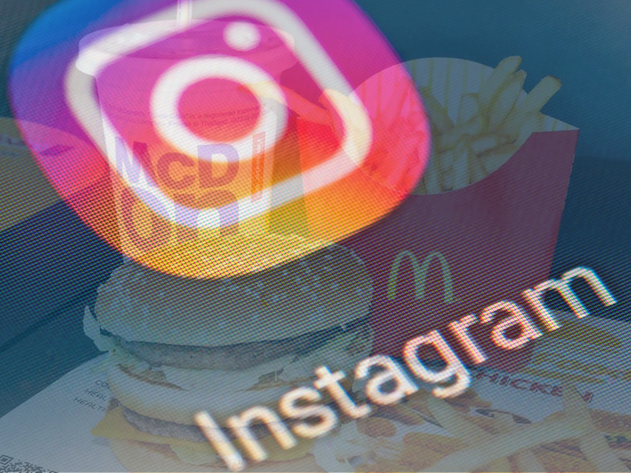

Is Social Media the Junk Food of our Social Lives?
"I share, therefore I am" – Sherry Turkle
The proposed goal of social media is in helping us stay more connected, or at least this is what Mark Zuckerberg would have us believe. But realistically we all know that's not the whole story. Social media companies such as Facebook (Meta) are businesses whose primary goal, arguably, is to turn a profit.
I therefore want to briefly explore the following question: Can the goals of business profit and social connection realistically align in our social media climate?
The business model
Money talks, as they say, so let's start there. How do social media companies, such as Meta (which I will use as the standard model for a social media company from here on), turn a profit?
Their platforms are, by and large, free to use, right? Well they aren't. We don't pay with our wallets – we pay with our personal information. We willingly, or more likely unknowingly, sign up to give social media companies access to much of our personal data. They are then able to turn a profit by using this data to help third parties generate personalised, targeted ads [1]. That is, our information is used by Meta and indirectly sold to third parties, who can then harness this information to understand their target audiences and, hopefully for them, make a greater profit or, worryingly for us, sway voter opinions in political spaces.
The more time we spend on a given social media platform, the more information we provide and the more ads we are exposed to. This means ultimately the more time we spend there, the greater the profits are for a company like Meta.
But if social media platforms allow us to stay connected, wouldn't more time on them help us remain more connected? And if so, can't both the goals we outlined above remain aligned?
Social connections online, an inverse relationship, and the junk food analogy
The primary line of evidence against this hypothesis is that beyond a certain point, increased social media use is inversely correlated with social connection. That is, the more time one spends on social media, the less connected and more isolated one feels. As an example taken from a recent paper published this year (2023), findings indicate that the more one uses social media with the motivation of maintaining social connections (as opposed to using it for promoting a business, say), the lonelier one becomes [2]. As the authors of the paper note:
"More time spent on social media was associated with more loneliness... Our findings suggest that people who use social media for the motive of maintaining their relationships feel lonelier than those who spend the same amount of time on social media for other reasons."
This is one example, but there are more to be found within the literature.
There is the issue of causality here, a chicken and egg problem – what came first, the loneliness or the social media use? But I might argue that it matters little which came first, and that they could drive each other. As an example I'm going to apply the analogy of junk food to the use of social media (I'm not the first to make this comparison).
When hungry, junk food satiates that hunger, but only partially. It is loaded with high amounts of fats, sugars and salts – the substances that tickle our feel good dopamine receptors in all the right (wrong) ways. It is also, thanks to streamlined food processing systems, quick and cheap. So what's the catch? Well besides the addictive dopaminergic system it plays on, junk food is often empty of many of the key nutrients that our bodies need for good health. It provides us with what are called "empty calories". And this lack of key nutrients leaves our bodies deficient and wanting for more, which drives the addictive behaviours further [3].
Social media platforms could be offering us a similar quantity of what I will call "empty relationships". As MIT sociologist Sherry Turkle points out:
"People start to view other people in part as objects. Imagine two people on a date. “Hey, I have an idea. Instead of our just looking at each other face-to-face, why don't we each wear Google Glass, so if things get a little dull, I can just catch up on my e-mail? And you won't know.” This disrupts the family, too. When Boring Auntie starts to talk at the family dinner table, her little niece pulls out her phone and goes on Facebook. All of a sudden her world is populated with snowball fights and ballerinas. And dinner is destroyed. Dinner used to be the utopian ideal of the American family having a canonical three-generation gathering." [4]
If we are bored or lonely, we have the quick, cheap, and readily available option of social media at our fingertips. Our dopamine receptors are tickled too, as it offers us more more exciting social connections than we could find in our day to day interactions. Think not only of your friend's holiday photos, but the content produced from influencers and celebrities, many of which are designed by PR teams so as to be more glamorous and beautiful, as well as intimate, giving us the impression that we have some small insight into their lives. This makes us feel a closer connection to them than is really the case (Ronaldo sharing photos of dinners with his family, for example).
The recent phenomenon of "parasocial relationships", which involve one sided relationships, often with a celebrity or influencer, is an increasing trend that has been amplified by these social media platforms [5]. And they can negatively affect relationships, as people invest their social time and energy into these "empty relationships" as opposed to real relationships.
These factors are all junk food equivalents of social connections – quick and cheap relationships with a high amount of exciting glitz and glamor (the sugars, fats and salts), but with no nutrition. This could surely only ever leave us wanting for more.
Contradictory goals, and a business model leading to dystopia?
Weaving these two threads together seems to suggest a contradiction of goals: that more time on social media platforms seems to increase social media companies profits, but that this would also lead to a decrease in connectedness with others. That is, increased profits lead to decreased social connections; or alternatively, increased social connections lead to decreased profits. The two goals are misaligned.
But if they are misaligned, which of the two goals could we expect Meta to prioritise?
Perhaps ever more worryingly is, given the finding that increased use of social media platforms is associated with more loneliness, it could be profitable for Meta that social media would cause loneliness, since this would only drive users to the platforms more in an attempt to "cure" that loneliness. So even if we don't have evidence that social media use *causes* loneliness, it would be in the business interest of Meta to make that happen.
This is not outside the realms of possibility. In fact, given there are no laws to prevent an outcome like this, it seems almost inevitable.
Slowing down the social media craze
There are other negative aspects to social media platforms that seem to be at play too, such as the reduction of social worth to a number (number of followers, likes, shares), and the drive to increase those numbers in an effort to increase one's social worth; or the increased risk of comparison with influencers and celebrities, and the drive therefore to attempt to emulate them, adding the risk of inauthenticity to our lives.
The problem is that even with decades of research showing us the harms of junk foods, our ancient and too easily influenced brains still struggle to resist them (I laughed at myself as, during the writing of this post, I ate a chocolate cookie!). Yet social media is still so recent that we have only just begun the long and arduous path of researching the social impact of these platforms.
Damaging our bodies through poor food diets is one thing. But damaging our social fabric and relationships through poor social diets is quite another. Don't you think we should tread (scroll) more carefully?
Sources
- https://www.investopedia.com/ask/answers/120114/how-does-facebook-fb-make-money.asp#:~:text=So%20how%20does%20the%20company,to%20present%20ads%20to%20viewers
- Bonsaksen T, Ruffolo M, Price D, Leung J, Thygesen H, Lamph G, Kabelenga I, Geirdal AØ. Associations between social media use and loneliness in a cross-national population: do motives for social media use matter? Health Psychol Behav Med. 2023 Jan 1;11(1):2158089. doi: 10.1080/21642850.2022.2158089. PMID: 36618890; PMCID: PMC9817115.
- https://www.tryhabitual.com/journal/why-is-junk-food-so-addictive
- https://www.scientificamerican.com/article/social-technologies-are-making-us-less-social/
- https://www.forbes.com/sites/traversmark/2023/04/23/a-psychologist-warns-against-the-dangers-of-a-one-sided-parasocial-relationship/?sh=722936e12484
(Note: This is an opinion piece, which means it is subject to bias. If I can offer an argument for the other side, I might say this: junk food is still better than no food at all.)
♦